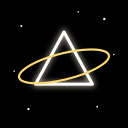

TESSERA
Tessera est un jeu de réflexion paisible, de lumière et de miroirs, pour Android. Tournez des miroirs, divisez des faisceaux et fusionnez des couleurs jusqu'à ce que chaque récepteur s'illumine, et regardez chaque plateau résolu devenir un vitrail. Pas de chrono, pas de vies, rien à acheter.
Bientôt sur Google Play · Français, English, Türkçe, Deutsch, Español
- Les miroirs dévient un faisceau, les séparateurs le divisent, les combinateurs fusionnent les couleurs (l'ambre et le cobalt donnent l'émeraude), les ponts laissent les faisceaux se croiser
- Chaque niveau est vérifié par la machine : résoluble, avec une seule solution la plus courte ; atteignez-la pour trois étoiles
- Un Atlas céleste de constellations, chacune un fond d'écran animé pour votre écran d'accueil
- Chaque son est synthétisé en direct sur une gamme pentatonique ; se joue d'un seul pouce
- Pas de bannière : une courte publicité de temps en temps entre deux écrans, et des vidéos à regarder si vous le souhaitez pour un indice ou un bonus gratuit
- Succès Google Play Games facultatifs ; les énigmes se jouent aussi hors ligne
Questions
Quel genre de jeu est Tessera ?
Un jeu de réflexion sur la lumière : vous tournez des miroirs et placez des prismes pour que chaque faisceau atteigne le récepteur de sa couleur. Il est paisible (ni chrono ni vies) mais exigeant : les derniers paliers demandent de longues chaînes de reflets, des faisceaux divisés et des fusions de couleurs.
Est-il gratuit ? Y a-t-il des publicités ?
Il est gratuit, sans achats intégrés. Pas de bannière ; une courte publicité plein écran peut apparaître de temps en temps entre deux écrans (jamais pendant une énigme, au plus une toutes les 90 secondes), et vous pouvez choisir de regarder de courtes vidéos pour un indice supplémentaire ou un bonus gratuit.
Combien y a-t-il de niveaux ?
1 000, en dix paliers, d'un simple miroir jusqu'aux matrices optiques de couleurs fusionnées. Chaque dixième niveau est une Clé de voûte cerclée d'or, la plus difficile de son chapitre.
Peut-on jouer hors ligne ?
Oui, les énigmes se jouent sans connexion Internet. Les publicités et les succès Play Games demandent une connexion.
Sur quels appareils fonctionne-t-il ?
Android 8.0 ou version ultérieure, sur téléphones, tablettes et appareils pliables (les grands écrans passent aussi en paysage).
Politique de confidentialité (en anglais)